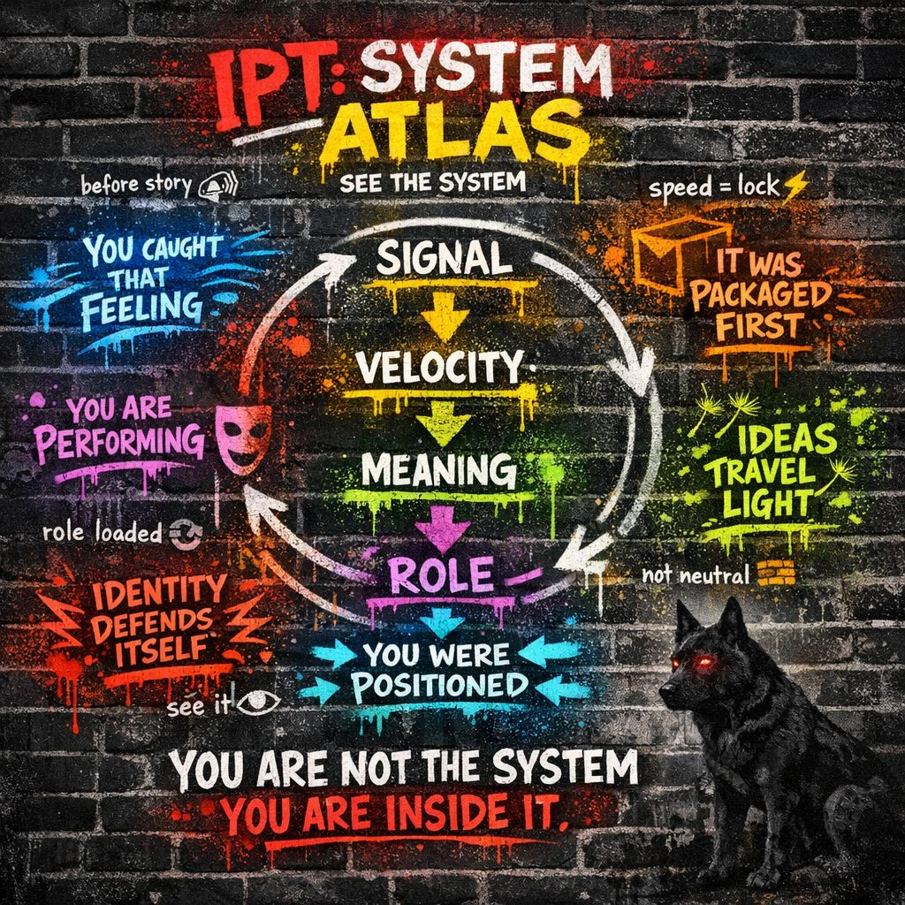

The System Atlas is not a belief system.
It is not a philosophy.
It is a navigation chart.
A way to see:
Think:
Not "What do I believe?"
But:
"What system is currently running?"
These are the coordinates everything moves through.
What is entering the system?
IPT Lens: Signal before story.
How fast is it moving through you?
IPT Lens: Speed determines lock-in.
What interpretation is forming?
IPT Lens: Meaning is assembled, not found.
Who are you becoming in response?
IPT Lens: Identity equals position in system.
What larger system is shaping all of this?
IPT Lens: The environment is not neutral.
From Dramaturgy
People perform based on audience and setting.
IPT Translation:
"You are not fixed. You are context-loaded."
From Emotional Contagion
IPT Translation:
"Emotion travels faster than truth."
From Framing Theory
IPT Translation:
"You don't receive reality raw."
From Memetics
IPT Translation:
"The best ideas aren't the truest. They're the most portable."
From Social Constructionism
IPT Translation:
"Consensus feels like truth."
From Cognitive Dissonance
IPT Translation:
"The system bends before it breaks."
From Behavioral Economics
IPT Translation:
"You are being steered, not just deciding."
When something hits you:
That's it.
That's the whole machine exposed.
📡 Signal
↓
⚡ Velocity
↓
🧩 Meaning
↓
🎭 Role
↓
🧱 Structure
↓
feeds back into Signal
A closed circuit.
You've seen this before... 😉